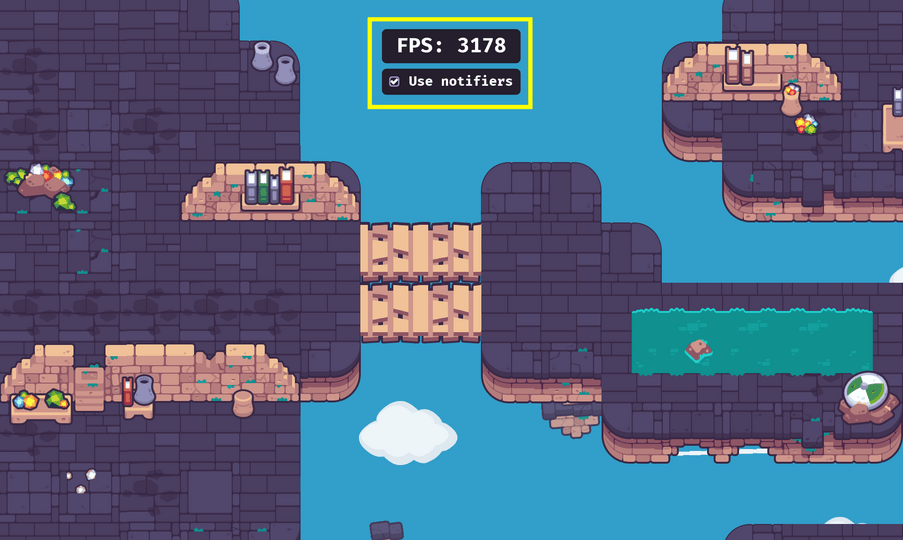

Double your 2D game’s framerate with visibility notifiers
This demo shows how you can use the VisibilityNotifier2D node to save on rendering performance. Depending on the game, it could double or triple the framerate, saving tons of CPU processing power for other game mechanics.

The larger your game levels and the more sprites you have, the more impactful this is.
The problem
For each visible sprite, every frame, the engine has to calculate if it’s on-screen to know what to render.
It’s quick for one sprite, but the more you add, the heavier it gets.
The good news is Godot will skip any node with visibility turned off. And it will also instantly skip its children.
The solution
To save processing power, you can turn off the visibility of nodes when they leave the screen. However, doing that individually for every node involves running the same check that causes performance issues in the first place.
So you want to turn off the visibility of nodes as high as possible in the node tree. That way, Godot doesn’t even need to check their children.
You can do that almost automatically with VisibilityNotifier2D nodes. This node has two signals screen_entered and screen_exited you can connect to the show() and hide() functions of a node respectively.
This node uses a rectangle to detect if it is on-screen or not and emits signals accordingly. It’s most efficient when a single VisibilityNotifier2D covers a scene with many sprites. For example, the interior of a house in an RPG game or an entire chunk of a forest or a level.